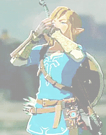

Video Game Recipes

Food in some popular video games looks tasty enough to eat! Here are real-life recipes for some of the tastiest looking treats.
Food in some popular video games looks tasty enough to eat! Here are real-life recipes for some of the tastiest looking treats.